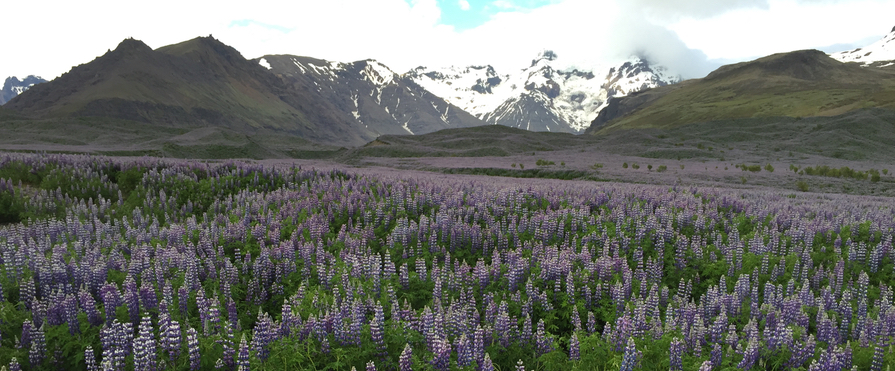

by Stephen Young
Posted on June 29, 2015 at 10:00 PM

- This place feels like another planet, as the ever-changing landscape is foreign to anything I've ever seen; it's unbelievably green due to all of the moss, there aren't many trees, the air smells somwhat sulforous but somehow manages to retain a refreshing scent, and the Icelandic countryside feels uninhabited save a few random smatterings of small towns, sheep and little birds.
- The people here look like vikings, which makes sense due to the fact that vikings were responsible for Iceland's initial colonization. Most are tall, fit, and very pretty or handsome.
- It doesn't get dark! (in the summertime, anyway). This aspect is super conducive to exploring and camping, as you can just turn off of the road whenever you want and pitch a tent. Conversely, this totally throws off your sleep schedule. Last night I woke up at 3:30 am and it felt like it could have been the middle of the day.
- There are a lot of small funny looking latches for opening and closing things, and the furniture is reminiscent of Ikea.
- The natives don't come off as overly friendly, and they don't practice too many formalities, but this might just be due to the fact that we're tourists. Many haven't waved back at us when we said hello, and initial conversation sometimes feels awkward. We're hoping that this perctption changes, though.
- The water is delicious, and you can drink from just about any stream or lake without needing to filter it.
- Exploring via Iceland's ring road makes it easy to see most of the cpuntry's sites. It circles around the entire island, is host to a bounty of campsites, and has markers for most of the places you need to check out. We started our trip in Rejkavik, and then headed south down this road - with a plan of circling the entire island in about 6 days. Check back every once in a while to see new pictures, which I'll try to post on a daily basis!